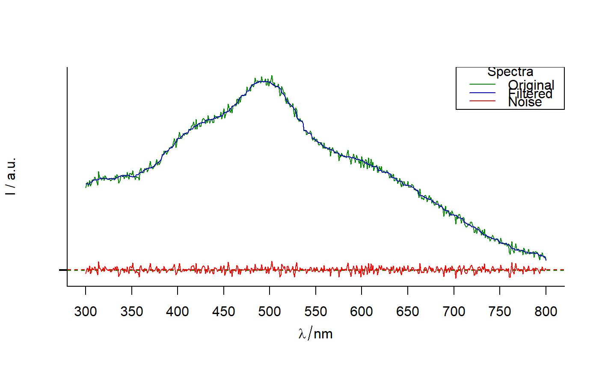

plot_spCompare.RdCompare 2 spectroscopic signals: plot 2 signals and their difference.
plot_spCompare( sp1, sp2, row = 1, colors = c("green4", "blue3", "red"), show.legend = TRUE, legend.title = "Spectra", legend.text = c(match.call()$sp1, match.call()$sp2, "Difference"), x = "topright", lwd = 1, ... )
| sp1, sp2 | hyperSpec objects of the same size |
|---|---|
| row | An integer, that indicates which row must be plotted. |
| colors | Vector of 3 colors for original, filtered and noise signals respectively. |
| show.legend | Logical |
| legend.title | The title of the legend. |
| legend.text | Character vertor of length = 3. The entries for the legend for for original, filtered and noise signals respectively. |
| x, y | the x and y co-ordinates to be used to position the legend.
They can be specified by keyword or in any way which is accepted
by xy.coords: See 'Details' in |
| lwd | A line width. More details in par. |
| ... | Other arguments to be passed to |
A plot made with R package graphics.
Other spHelper plots:
check_palette(),
layer_spRangeMean(),
plot_colors(),
plot_hyPalette(),
plot_spDiff(),
plot_spDistribution(),
qplot_confusion(),
qplot_crosstab(),
qplot_infoDim(),
qplot_kAmp(),
qplot_kSp(),
qplot_prediction(),
qplot_spRangeCenter(),
qplot_spRangeMedian(),
qplot_spStat(),
qplot_spc(),
rmExpr(),
rm_stripes(),
stat_chull()
# Apply running medians filter: sp_filt <- apply(Spectra2, 1, function(x) {runmed(x, 15)}) plot_spCompare(Spectra2, sp_filt, row = 2)# Modify the legend: plot_spCompare(Spectra2, sp_filt, row = 2,legend.text = c("Original","Filtered","Noise"))